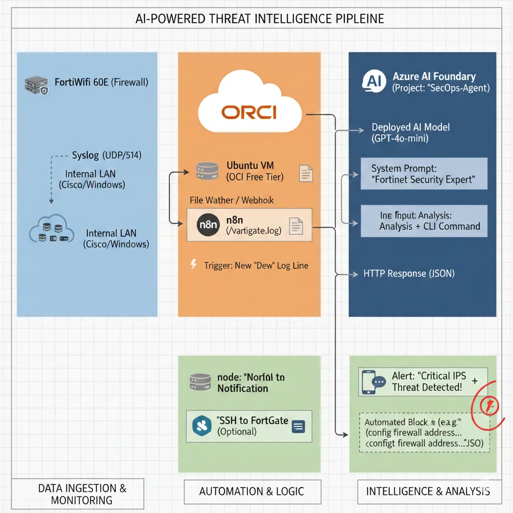

AiOps: AI-Powered Network Security Analyst
The Concept: This project involves the creation of an automated pipeline designed to monitor FortiGate firewall logs in real-time. When a "Critical" threat or unusual traffic pattern is detected, n8n orchestrates the transfer of log data to an AI model within Azure AI Foundry. The AI analyzes the threat context and suggests specific FortiOS CLI commands to block the attacker and harden the network.
Technical Architecture Diagram

Summary of the Data Flow
- FortiGate detects an attack → sends a log to the Master Node (via VPN).
- n8n (Cloud Worker) reads the log and forwards it to Azure AI Foundry for analysis.
- Azure AI returns a recommended FortiOS CLI remediation command.
- n8n sends the alert and remediation to your phone or Slack/Discord for immediate action.
The Architecture (The "How-To")
Step 1: The Data Source (FortiGate & OCI)
Log Export: The FortiWifi 60E is configured to stream security logs via Syslog (UDP 514) to a dedicated Ubuntu Linux server hosted on the OCI (Oracle Cloud Infrastructure) Free Tier.
Trigger: An n8n workflow is configured to monitor the incoming log files or listen for an incoming Webhook notification the moment a "Deny" event or "IPS Alert" is registered by the firewall.
Step 2: The Logic & Orchestration (n8n)
Parsing: n8n utilizes function nodes to "clean" the raw log data, extracting critical variables such as the Source IP, Destination IP, Port number, and Attack Signature.
Context Injection: The workflow automatically enriches the data by adding environmental context, such as: "This request is targeting a Cisco 1841 Router environment; check for known vulnerabilities related to this hardware."
API Call: The structured data is sent via an authenticated HTTP Request to the Azure AI Foundry REST Endpoint.
Step 3: The Intelligence (Azure AI Foundry)
Model: I utilized the GPT-4o-mini model hosted within a private Azure AI Foundry Project for cost-effective, low-latency reasoning.
System Prompt: The model is constrained by a professional system message: "You are a Senior Network Security Engineer. Analyze this FortiGate IPS log. Determine if it's a False Positive or a Brute Force attack. If it's an attack, provide the FortiOS CLI syntax to blacklist the Source IP."
Step 4: The Action & Automation
Notification: n8n pushes a formatted message to Slack or Discord. This alert contains the raw log, the AI's risk assessment, and the ready-to-use CLI remediation code.
Self-Healing (Optional): The workflow is architected to support an SSH node that can automatically log into the FortiGate firewall and apply the suggested block command, effectively creating a self-defending network.
Business Impact & Value
- Reduced MTTR (Mean Time to Respond): Threat analysis that usually takes a human analyst 30 minutes is completed in under 10 seconds.
- Cost Efficiency: By utilizing the OCI Free Tier and Azure AI Foundry's optimized models, this SOC-grade automation is maintained at a near-zero operational cost.
- Error Reduction: AI-generated CLI commands ensure that syntax is perfect, reducing the risk of human error during high-pressure security incidents.
- 24/7 Monitoring: The network is protected around the clock without the need for a full-time security staff presence.
Project Managed by: Syphe IT | DevOps | Infrastructure & Security Engineer